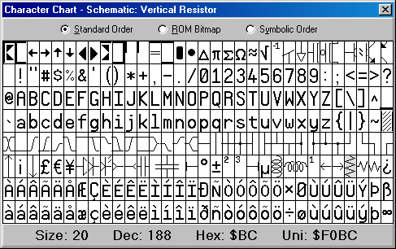
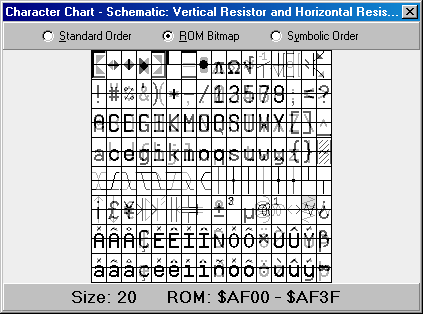
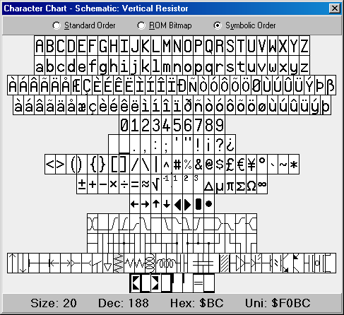

The Character Chart window is available from the Help → View Character Chart… menu item. It shows the entire character set for the Parallax Font that is used by the Propeller Tool and is also built into the ROM of the Propeller chip. There are three views in the Character Chart:
In each of the three views, the mouse, left mouse button, cursor keys and enter button can be used to highlight and select a character. If clicked (or enter pressed), the highlighted character will be entered into the current edit page at the current cursor location. As a new character is highlighted, the title bar and info bar of the window updates to show the name, size and address information for that character. Moving the mouse wheel up or down changes the font size displayed in this window.
Standard Order displays the characters in the order that follows that of the ANSI set typically used by modern day computers.

Parallax Font Character Chart, Standard Order
The Vertical Resistor character (near the lower right of the display) is selected in this example. The information at the bottom of the window shows the font size, in points, and the character’s location in the character set in decimal, hexadecimal, and Unicode. Note: The Unicode value is the address of the character in the True Type® Font file that is used by the Propeller Tool. The decimal and hexadecimal values are the logical addresses of the character in the character set within the Propeller chip and correspond to that location in the ANSI character set used by most computers.
The ROM Bitmap shows the characters in a way representative of how they are stored in the Propeller chip’s ROM. This view uses four colors, white, light gray, dark gray, and black, to represent the bit pattern of each font character. Each character, in the Propeller chip’s ROM, is defined with two bits of color (four colors per row in each character cell). The rows of each pair of adjacent characters are overlapped in memory for the purpose of creating the run-time characters used to draw 3D buttons with hot key and focus indicators; see the Shortcut Keys. The information at the bottom of the window shows the font size, in points, and the selected character’s pixel data address range in the Propeller chip’s ROM.

Parallax Font Character Chart, ROM Bitmap
Symbolic Order shows the characters arranged categorically. This is useful for finding the special characters in the Parallax font for depicting timing diagrams, lines, arrows, and schematics.

Parallax Font Character Chart, Symbolic Order
Propeller Help Version 1.2
Copyright © Parallax Inc., dba Parallax Semiconductor
6/17/2011